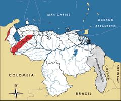

Tremarctos ornatus
| Oso frontino | |
|---|---|
| Riesgo de extinción | |
 En peligro (UICN) | |
| Clasificación científica | |
| Reino: | Animalia |
| Filo: | Chordata |
| Clase: | Mammalia |
| Orden: | Carnivora |
| Familia: | Ursidae |
| Género: | Tremarctos |
| Especie: | Tremarctos ornatus |
| Nombre binomial | |
|
Tremarctos ornatus Cuvier, 1825 | |
| Distribución | |
|
 Mapa de distribución de Tremarctos ornatus | |
Contenido
Información de Evaluación
- Categoría y Criterio Regional: En Peligro C2a(i)
- Fecha de Evaluación Regional: 2015
- Evaluadores: Jesús Morales-Campos y Ariany García-Rawlins
- Categoría y Criterio Global: Vulnerable A4cd
Justificación
Evaluaciones Previas
1999: En Peligro (EN)
2008: En Peligro (EN)
Información General
Nombres comunes
Oso frontino, oso andino, el salvaje, oso negro, ucumari, la fiera, mashiramo (yukpa), masirsa (japrería), sabaidakú (barí), koju o jez (wayuunaiki), spectacled bear, Andean bear.
Notas taxonómicas
Sinónimos
Descripción
El oso frontino posee un tamaño mediano comparado con otros osos, mide entre 1,12 y 2,22 m de alto y pesa entre 60 y 170 kg, siendo el macho más grande que la hembra. Su pelaje es denso y largo variando de negro a marrón rojizo. Posee una banda ancha de tonos blancos o amarillos claros que puede extenderse hacia la frente, alrededor de los ojos, el borde del hocico, las mejillas y el cuello hasta alcanzar el pecho. Es plantígrado, posee cinco dedos con garras largas y curvas no retráctiles y un «falso pulgar» en las patas delanteras. Presenta hábitos principalmente diurnos, solitarios, terrestres y trepadores. Es una especie omnívora, las palmas, bromelias y frutas son sus alimentos más comunes; en consumo de proteína es un animal oportunista (García-Rangel 2012).
Distribución
El oso frontino es la única especie viviente de la subfamilia Tremarctinae y el único úrsido de Suramérica. Se distribuye en la cordillera de los Andes abarcando Venezuela, Colombia, Ecuador, Perú, Bolivia y el noroeste de Argentina. La especie habita desiertos costeros, bosques de tierras bajas, premontanos y montanos tanto deciduos, como semideciduos y siempreverdes, al igual que páramos y puna. En Venezuela, se encuentra en la sierra de Perijá, el macizo de El Tamá y la cordillera de Mérida en los estados Apure, Barinas, Lara, Mérida, Portuguesa, Táchira, Trujillo y Zulia. Su presencia en el país ha sido reportada desde los 70 hasta los 4300 m de altitud; la mayoría de los registros se localizan por encima de 1000 m. En este intervalo, este oso habita bosques premontanos y montanos siempreverdes, en especial nublados, y páramos (Goldstein 1990, Goldstein 1993, Yerena et al. 2007, Sánchez-Mercado 2008, García-Rangel 2012, Cosse et al. 2013, Sánchez-Mercado et al. 2014).
- Sistema: Terrestre
- Bioregión:
- Intervalo altitudinal (m): 70 - 4300
- Endémica: No
Situación
Aunque no existen evaluaciones precisas, se presume que el tamaño poblacional de Tremarctos ornatus en Venezuela ha disminuido por pérdida de hábitat y cacería. La evaluación más actualizada estimó una población de entre 1140 y 1578 individuos a nivel nacional. Modelos de distribución indican que la cordillera de Mérida y el macizo de El Tamá albergan 10.217 + 2.762 km2 de hábitat potencial para la especie, concentrándose el mismo al norte y centro de la cordillera de Mérida entre los parques nacionales Dinira, Yacambú, El Guache, Teta de Niquitao-Guirigay, Guaramacal y Sierra Nevada. Esta distribución está disgregada en 97 parches de los cuales solo 15 pueden albergar más de 100 ejemplares. Las áreas protegidas abarcan 42% del total de esta extensión. Se estiman unos ~8000 km2 de hábitat disponible para el oso frontino en la sierra de Perijá, que junto al bloque central de la cordillera de Mérida constituyen las mayores zonas boscosas de las que la especie puede disponer. Se presume que la cacería ha ocasionado una reducción poblacional significativa a pesar de no haber un registro sistemático. Un análisis de reportes históricos indica que en la cordillera de Mérida y el macizo de El Tamá, el mayor riesgo de cacería se concentra al sur abarcando los parques nacionales Tapo-Caparo, Tamá y Chorro del Indio. La información que se tiene sobre caza en la sierra de Perijá es casi inexistente. En el ámbito mundial el oso frontino está catalogado Vulnerable, mientras que a nivel nacional ha sido clasificado En Peligro (Goldstein 2002a, Goldstein 2002b, Rodríguez, D. et al. 2003, Ruiz-García et al. 2003, Kattan et al. 2004, García-Rangel 2005, Ruiz-García et al. 2005, Sánchez-Mercado et al. 2005, Yerena et al. 2007, Goldstein et al. 2008, Sánchez-Mercado 2008, Sánchez-Mercado et al. 2008, García-Rangel 2011, Sánchez-Mercado et al. 2014).
- EOO (km2): Temporalmente sin información
- AOO (km2): Temporalmente sin información
- Tendencia Poblacional: Decreciendo
Amenazas
La pérdida y fragmentación de hábitat son la principal amenaza para Tremarctos ornatus, dado un proceso histórico de reducción y fragmentación incluso en áreas protegidas. Estudios recientes reportan tasas anuales de deforestación que alcanzan un 2,5%. En segundo lugar, está la cacería furtiva motivada por: 1) deporte, 2) la cosmovisión andina, 3) la valoración mágico-curativa, 4) conflictos asociados a la depredación de ganado y al consumo de cultivos, y 5) la utilización de la especie como alimento o mascota. En Venezuela, la tasa de cacería estimada oscila entre uno y cinco osos por año, pero es necesaria una proyección robusta. Al sur de la cordillera de Mérida, entre ocho y nueve de cada diez individuos pudieran estar siendo cazados. La incidencia de esta amenaza parece mantenerse constante durante las últimas dos décadas, pero el impacto estimado en la cordillera merideña implica una probabilidad de extinción mayor al 50% en los próximos 33 años (Goldstein 1993, Peyton et al. 1998, Peyton 1999, Goldstein 2002a, Goldstein 2002b, Rodríguez, D. et al. 2003, Kattan et al. 2004, García-Rangel 2005, Sánchez-Mercado et al. 2005, Yerena et al. 2007, Sánchez-Mercado 2008, Sánchez-Mercado et al. 2008, García-Rangel 2011, Sánchez-Mercado et al. 2014, A. E. Bracho obs. pers.). Las amenazas sobre el oso frontino revelan debilidad e incoherencia en la gestión ambiental y ordenación del territorio por parte de las autoridades nacionales. Estos son temas de competencia casi exclusiva del Ministerio del Poder Popular para Ecosocialismo y Aguas y del Ministerio Público, y es patente su debilidad política en la toma de decisiones. Todo esto se traduce en la expansión de la frontera agrícola, una baja eficiencia en la producción agropecuaria, la falta de atención a la cacería furtiva y el limitado alcance de los programas de educación ambiental (Yerena et al. 2007, García-Rangel 2011).
Conservación
El oso frontino está incluido en el Apéndice I de la Convención sobre el comercio internacional de especies amenazadas de fauna y flora silvestres (Cites 2014) y ha sido declarado en veda indefinida y como Especie en Peligro de Extinción (Venezuela 1996a, Venezuela 1996b). Existe un sistema de áreas protegidas a lo largo de su distribución pero se requiere reforzar acciones de vigilancia y control y la protección legal de otras zonas. La valoración nacional de estas áreas protegidas es fundamental pues hasta ahora funcionan como «parques de papel». Se cuenta con una estrategia ecorregional para la conservación Tremarctos ornatus y se actualizó el plan de acción nacional. Gobiernos regionales y locales decretaron al oso frontino patrimonio natural y cultural, iniciando algunos programas de conservación. Instituciones, organizaciones de la sociedad civil y comunidades desarrollan iniciativas de sensibilización y divulgación. Grupos profesionales establecen directrices de conservación y prioridades de investigación. La reproducción en cautiverio ha sido exitosa y se realizó una evaluación demográfica y genética de la población cautiva. Se crearon foros electrónicos para el intercambio de información. Se han desarrollado estudios de distribución, disponibilidad y uso de hábitat, así como pérdida de hábitat y fragmentación, vulnerabilidad, cacería y conflicto generando información para el resguardo del animal. Estos esfuerzos incluyen una base de datos con registros a nivel nacional (Datoso). En la actualidad, se llevan a cabo estimaciones de tamaño poblacional, evaluaciones de cacería y del impacto del cambio climático sobre la especie (SBSG 1981, Rosenthal 1988, Goldstein 1990, Goldstein 1993, Yerena 1994, Torres et al. 1995, Venezuela 1996a, Venezuela 1996b, Peyton et al. 1998, Peyton 1999, Torres 2000, Goldstein 2002a, Goldstein 2002b, Rodríguez, D. et al. 2003, Ruiz-García et al. 2003, Yerena et al. 2003, Goldstein 2004, Goldstein y Márquez 2004</a>, Torres 2004, Martínez, Z. 2005, Pernalete 2005, Ruiz-García et al. 2005, Rodríguez-Clark y Sánchez-Mercado 2006, Yerena et al. 2007, Torres 2008, Sánchez-Mercado 2008, Sánchez-Mercado et al. 2008, Monsalve Dam 2009, Monsalve Dam et al. 2010, Sánchez-Mercado et al. 2010, García-Rangel 2011, García-Rangel et al. 2011, Lameda Camacaro 2011, García-Rangel 2012, Cites 2014, Sánchez-Mercado et al. 2014, S. García-Rangel obs. pers.). Los esfuerzos varían en continuidad, impacto, calidad y seguimiento por lo que es prioritario para la conservación de este oso: 1) frenar y revertir la pérdida de hábitat, 2) consolidar el sistema de áreas protegidas, 3) profundizar la investigación sobre amenazas, 4) aplicar una estrategia de educación ambiental a largo plazo, 5) desarrollar un plan para el manejo ex situ, y 6) establecer un protocolo para casos de decomiso y cacería (Yerena et al. 2007). El resguardo del oso frontino en Venezuela no será posible sin una «política de conservación coherente, continua y sólida donde concuerden las políticas locales, estatales y nacionales, así como la normativa legal y constitucional en materia de conservación ambiental» (Yerena et al. 2007).
Autorías
Autores originales
Shaenandhoa García-Rangel, Denis Torres, Andrés Eloy Bracho, Kathryn M. Rodríguez-Clark, Fátima Imarú Lameda-Camacaro, Ezequiel Hidalgo, Robert Márquez, Ada Sánchez-Mercado, Edgard Yerena y Dorixa Monsalve
Colaboradores
Ilustrador
Astolfo Mata
Referencias
- Cites. (2014). Apéndices I, II y III (válidos desde el 14 de septiembre de 2014). Convención sobre el Comercio Internacional de Especies Amenazadas de Fauna y Flora Silvestres (CITES). Disponible en <www.cites.org/sites/default/files/esp/app/2014/S-Appendices-2014-09-14.pdf>. 47 pp.
- Cosse, M., et al. (2013). Presence of Andean Bear (Tremarctos ornatus) in Argentina: non-invasive genetic tools for determining the southernmost record of the species. Belfast - Irlanda, Queen's University: Page 19.
- García-Rangel, S. (2011). Ecology and conservation of the andean bear in Venezuela, University of Cambridge. Doctor in Philosophy.
- García, F. J., et al. (2012). "Nuevo registro de Ichthyomys pittieri (Rodentia: Cricetidae) para la Cordillera de la Costa Central de Venezuela con notas sobre su historia natural y distribución." Mastozoología Neotropical 19: 303-309.
- García-Rangel, S., et al. (2011). Global warming: a threat for the Andean bear? Ottawa, Canadá: Page 33.
- Goldstein, I. R. (1990). Distribución y hábitos alimentarios del oso frontino, Tremarctos ornatus en Venezuela, Universidad Simón Bolívar.
- Goldstein, I. R. (1993). "Distribución, presencia y conservación del oso frontino en Venezuela." Biollania 9: 171-181.
- Goldstein, I. R. (2002). "Andean bear-cattle interactions and tree nest use in Bolivia and Venezuela." Ursus 13: 369-372.
- Goldstein, I. R. (2002). Addressing people-spectacled bear conflicts due to crop raiding and livestock predation. Kent, UK, Society for Conservation Biology.
- Goldstein, I. R. (2004). "Andean bear use of the epiphytic bromeliad Tillandsia Fendleri at Quebrada el Molino, Venezuela." Ursus 15(1): 54-56.
- Goldstein, I. R., et al. (2008). "Tremarctos ornatus." www.iucnredlist.org.
- Goldstein, I. R. and R. Márquez (2004). "Monitoring Andean bear activity and movement along natural trails using non-invasive techniques in Venezuela." International Bear News 13(3): 23.
- Kattan, G., et al. (2004). "Range fragmentation of the spectacled bear (Tremarctos ornatus) in the northern Andes." Oryx 38(2): 155-163.
- Lameda Camacaro, F. I. (2011). Etnozoología del oso andino (Tremarctos ornatus) en el Noroeste de Argentina y la Cordillera Andina de Venezuela. Argentina, Facultad de Ciencias Naturales, Universidad Nacional de Salta. Tesis de Maestría en Recursos Naturales y Medio Ambiente: 183 pp.
- Martínez, Z. (2005). Memorias: Taller Estrategias de Conservación para el Oso Andino en Venezuela. Barquisimeto, Lara - Venezuela, Fundación para la Defensa de la Naturaleza: Página 94.
- Monsalve Dam, D. (2009). Ecología poblacional y viabilidad de las poblaciones de oso andino (Tremarctos ornatus) en el sistema montañoso Yacambú-Corredor-Terepaima. Caracas, Venezuela, Departamento de Biología de Organismos, Universidad Simón Bolívar: Página 64.
- Monsalve Dam, D., et al. (2010). Efectividad de las áreas protegidas para la conservación del oso andino, Tremarctos ornatus, en los andes suramericanos. Ciencia y conservación de especies amenazadas en Venezuela: Conservación Basada en Evidencias e Intervenciones Estratégicas. R. De Oliveira-Miranda, J. Lessmann, A. Rodríguez-Ferraro and F. Rojas-Suárez. Caracas, Venezuela, Provita: Páginas: 127-136.
- Pernalete, J. M. (2005). Grupo de Trabajo de Osos Frontinos de Venezuela. Barquisimeto, Asociación Venezolana de Parques Zoológicos y Acuarios: 1 p.
- Peyton, B. (1999). Spectacled bear conservation action plan. Bears: Status Survey and Conservation Action Plan. C. Servheen, S. Herrero and B. Peyton. Gland, Suiza, IUCN/SSC Bear and Polar Bear Specialist Groups: Páginas: 157-198.
- Peyton, B., et al. (1998). "Status of Wild Andean Bears and Policies for Their Management." Ursus 10: 87-100.
- Rodríguez, D., et al. (2003). Estrategia ecorregional para la conservación del oso andino en Los Andes del norte. Cali, Colombia, Comunicaciones WWF-Colombia.
- Rodríguez-Clark, K. M. and A. Y. Sánchez-Mercado (2006). "Population management of threatened taxa in captivity within their natural ranges: Lessons from Andean bears (Tremarctos ornatus) in Venezuela." Biological Conservation 129: 134-148.
- Rodríguez, J. P. y Rojas-Suárez, F. (1999). Libro Rojo de la Fauna Venezolana, segunda edición. PROVITA, Fundación Polar. Caracas. 444 pp.
- Rodríguez, J. P. y Rojas-Suárez, F. (Eds.) (2008). Libro Rojo de la Fauna Venezolana, tercera edición. Provita y Shell Venezuela, S. A. Caracas, Venezuela. 364 pp.
- Rosenthal, M. (1988). Proceedings of the First International Symposium on the Spectacled Bear. Chicago, USA, Lincoln Park Zoo of Chicago.
- Ruiz-García, M., et al. (2003). "Genética molecular de poblaciones aplicada al estudio de dos grandes carnívoros neotropicales (Tremarctos ornatus Cuvier, 1825-oso andino y Panthera onca Linné, 1758-jaguar): Lecciones de Conservación." Boletín de la Real Sociedad Española de Historia Natural. Sección Biológica 98(1-4): 135-158.
- Ruiz-García, M., et al. (2005). "Microsatellite Analysis of the Spectacled Bear (Tremarctos ornatus) Across its Range Distribution." Genes & Genetic Systems 80: 57-69.
- Sánchez-Mercado, A. Y. (2008). Efecto de la estructura espacial en la persistencia de poblaciones fragmentadas: el oso andino (Tremarctos ornatus) en Venezuela como caso de estudio, Centro de Estudios Avanzados, Instituto Venezolano de Investigaciones Científicas. Ph D. Thesis.
- Sánchez-Mercado, A. Y., et al. (2005). Una base de datos de registros del oso andino (Tremarctos ornatus) en Venezuela y su aplicabilidad para evaluar factores relacionados con la cacería. Barquisimeto, Venezuela, En: Memorias: Taller Estrategias de Conservación para el Oso Andion en Venezuela.
- Sánchez-Mercado, A. Y., et al. (2008). "Factors affecting poaching risk to Vulnerable Andean bears Tremarctos ornatus in the Cordillera de Mérida, Venezuela: space, parks and people." Oryx 42(03): 437-447.
- Sánchez-Mercado, A. Y., et al. (2010). Efectividad de las iniciativas de educación ambiental para la conservación del oso andino (Tremarctos ornatus) en la cordillera andina. Ciencia y conservación de especies amenazadas en Venezuela: Conservación Basada en Evidencias e Intervenciones Estratégicas. R. De Oliveira-Miranda, J. Lessmann, A. Rodríguez Ferraro and F. Rojas-Suárez. Caracas, Venezuela, Provita: Páginas: 137-146.
- Sánchez-Mercado, A. Y., et al. (2014). "Combining threat and occurrence models to predict potential ecological traps for Andean bears in the Cordillera de Mérida, Venezuela." Animal Conservation 17.4: 388-398.
- SBSG (1981). Spectacled Bear Specialist Group Newsletter 3: Páginas: 1-14.
- Torres, D. A. (2000). High-mountain livestock ranching within the habitat of large carnivores: Sierra Nevada National Park, Merida, Venezuela, Fundación Andígena.
- Torres, D. A. (2004). Conservación del Oso Andino en la Sierra de Portuguesa: un enfoque integrado de investigación, educación ambiental y participación local. Primera Etapa: 2003-2004, Informe final remitido al Fondo Iniciativa Especies Amenazadas (IEA). Andígena.
- Torres, D. A. (2008). Caracterización de conflictos socio-espaciales entre la ganadería y los grandes mamíferos en el sector cuenca del Río Nuestra Señora. Parque Nacional Sierra Nevada, Venezuela. Escuela de Geografía, Facultad de Ciencias Forestales y Ambientales. Mérida, Venezuela, Universidad de Los Andes. Tesis de pregrado.
- Torres, D. A., et al. (1995). "Monitoring the spectacled bear (Tremarctos ornatus) populations in the watershed of the Capáz River, Mérida state, Venezuela." Memorias de La Sociedad Científica La Salle LV(143): 25-40.
- Venezuela (1996). Decreto 1486: Especies en Peligro de Extinción. Caracas, Gaceta Oficial No. 36.062- 10 de octubre de 1996.
- Venezuela (1996). Decreto 1485: Animales Vedados para la Caza. Caracas, Gaceta Oficial No. 36.059 - 7 de octubre de 1996.
- Yerena, E. (1994). Corredores ecológicos en Los Andes de Venezuela. Parques Nacionales y Conservación Ambiental 4. Caracas, Venezuela, Fundación Polar.
- Yerena, E., et al. (2003). "Building consensus on biological corridors in the Venezuela Andes." Mountain Research and Development 23(3): 215-218.
- Yerena, E., et al. (2007). Plan de acción para la conservación del oso frontino (Tremarctos ornatus) en Venezuela (2006-2016). Mérida, Venezuela, Fundación Andígena, FUDENA, Universidad Simón Bolívar.